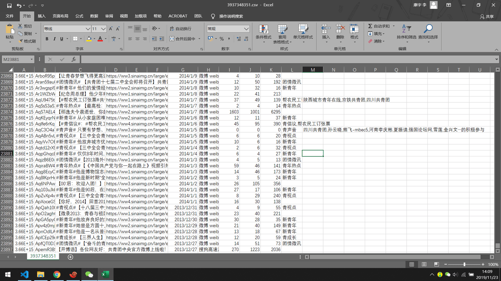
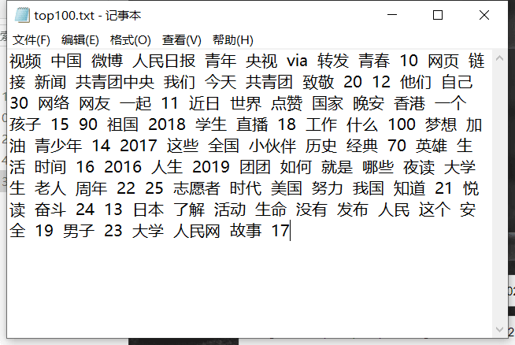

帮小乔爬了一下共青团中央的所有微博，做了一下高频词统计。
爬取数据
爬数据用的github上别人的项目，地址是https://github.com/dataabc/weibo-crawler
爬之前需要设置好要爬的微博的微博id，以及时间范围、原创微博还是转发微博、是否爬图片、视频等选项。
然后直接运行
python weibo.py
这里把时间设置成1900-01-01，爬了共青团中央至2019-11-23的所有原创微博。
这是爬好的数据，一共有两万多条数据。

统计高频词
使用jieba分词并统计高频词频率
先把微博内容提取出来
import csv
with open('3937348351.csv','r' , encoding='utf-8') as csvfile:
reader = csv.DictReader(csvfile)
column = [row['正文'] for row in reader]
with open("C:\\Users\\Lenovo\\Desktop\\词频统计\\in.txt", "w", encoding='utf-8') as f:
f.write(''.join(column))然后使用jieba处理
stop = input('stop路径: ')
jieba.analyse.set_stop_words(stop)
file = input('输入文件路径: ')
lines = open(file,encoding= 'utf8').read()
new = input('输出文件路径: ')
newfile = open(new,"w",encoding= 'utf8')
num=int(input('高频词个数: '))
newfile.write(" ".join(analyse.extract_tags(lines, topK=num, withWeight=False, allowPOS=())))
newfile.close()高频词个数输入100，就可以得到共青团中央前100的高频词了，这是结果：

生成词云
得到高频词后可以使用wordcloud生成词云：
from wordcloud import WordCloud
wc = WordCloud(
scale=64, #图片规模
background_color="white", #背景颜色
max_words=500, #显示最大词数
font_path="./simfang.ttf", #使用字体
min_font_size=15, #字体大小
max_font_size=50, #字体大小
width=400 #图幅宽度
)
wc.generate(data)
wc.to_file("pic.png")这是得到的结果：

可以修改scale、width等参数生成不一样的图。这是结果：